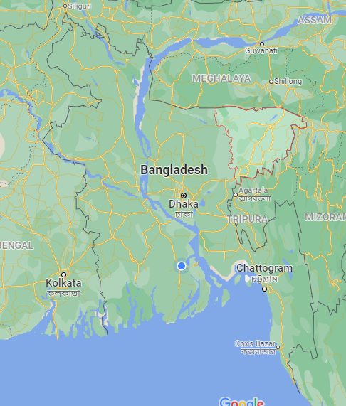

সিলেট/SYLHET
সিলেট বিভাগ বাংলাদেশের উত্তর-পূর্ব প্রান্তে অবস্থিত একটি প্রশাসনিক অঞ্চল, যা সিলেট, মৌলভীবাজার, সুনামগঞ্জ ও হবিগঞ্জ —
এই চারটি জেলা নিয়ে গঠিত। প্রাচীনকালে এটি শ্রীহট্টের কেন্দ্রীয় প্রদেশ ছিল।

নামকরণের ইতিহাস
বাংলা ও আঞ্চলিক সিলটি ভাষায় প্রাচীনকাল থেকেই সিলেটকে শ্রীহট্ট নামে ডেকে আসা হয়েছে। কিন্তু শ্রীহট্ট নামের
উৎস নিয়েও রয়েছে ব্যাপক অস্পষ্টতা। এর সাথে হিন্দু পৌরাণিক আখ্যানের প্রভাব জড়িত থাকতে পারে বলে ধারণা
করা হয়। হিন্দু পুরাণ অনুযায়ী শ্রী শ্রী হাটকেশ্বর হচ্ছে মহাদেব শিবের বহু নামের অন্যতম। তৎকালীন গৌড় (শ্রীহট্ট)
রাজাদের কর্তৃক পুজিত শ্রী হাটকেশ্বরই শ্রীহট্ট নামের উৎস বলে অনেকে মনে করেন।[৪] আবার হিন্দুদেবী লক্ষ্মীর
আরেক নাম শ্রী, বর্তমান সিলেট শহরের অনতিদূরে দেবী মহালক্ষ্মীর একটি সুপ্রসিদ্ধ মন্দিরও রয়েছে, যেটি আবার
সতীপীঠের মধ্যেও অন্যতম, অতএব, শ্রীহট্ট নামটি শ্রী-এর হাট (অর্থাৎ বাজার) থেকেও হতে পারে।
আর, সিলেটের নামকরণের বিষয়ে একটি প্রচলিত কিংবদন্তীতুল্য কাহিনী হলো, হযরত শাহজালাল যখন শ্রীহট্টের দিকে
আগমন করেন তখন তৎকালীন হিন্দু রাজা গৌড়গোবিন্দ তার আগমন থামাতে শ্রীহট্ট সীমান্তে তার কথিত জাদু ক্ষমতার
দ্বারা পাথরের দেয়াল বা পাহাড়ের প্রতিবন্ধকতা তৈরি করেন। হযরত শাহজালালও তার অলৌকিক ক্ষমতা দিয়ে ‘শিল হট্’
লতেই সেই শিল বা পাথরের প্রতিবন্ধক হটে যায় বা অপসারিত হয়। এ থেকেই এই ভূমির অন্য নাম হয়েছে শিল-হট
থেকে সিলেট। বরং ব্রিটিশ আমলেই এই সিলেট শব্দটির সৃষ্টি হয়েছে বলে ধারণা করা হয়।
ইতিহাস ও ঐতিহ্য
ইতিহাসবিদেরা বলেন, বহুযুগ ধরে সিলেট একটি বাণিজ্যিক শহর হিসেবে প্রচলিত আছে। ধারণা করা হয়ে থাকে যে
"হরিকেল রাজত্বের" মূল ভূখণ্ড ছিল এই সিলেট। ১৪'শ শতকের দিকে এই অঞ্চলে ইসলামি প্রভাব দেখা যায় সূফী
দার্শনিকদের আগমনের মাধ্যমে। ১৩০৩ সালে কালৈতিহাসিক মুসলিম ধর্মপ্রচারক হযরত শাহ জালাল রহ.-এর
আবির্ভাব ঘটে এই সময়ে। তিনি মক্কা থেকে দিল্লি ও ঢাকা হয়ে এই এলাকায় আসেন। তার আধ্যাত্মিক ক্ষমতার প্রভাবে
ও তার অনুসারী ৩৬০ জনের মাধ্যমে আরো অনেকেই ইসলাম ধর্ম গ্রহণ করে। পরবর্তীতে তা দেশের অন্যত্র ও ছড়িয়ে
পড়ে। তার দরগাহ সিলেটের একটি অন্যতম দর্শনীয় স্থান হিসেবে বিবেচিত হয়।একসময় তার নামানুসারে এ অঞ্চল
জালালাবাদ নামে পরিচিত হয় ।